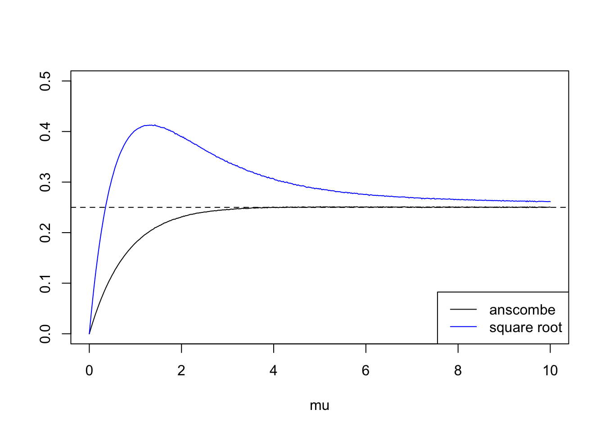
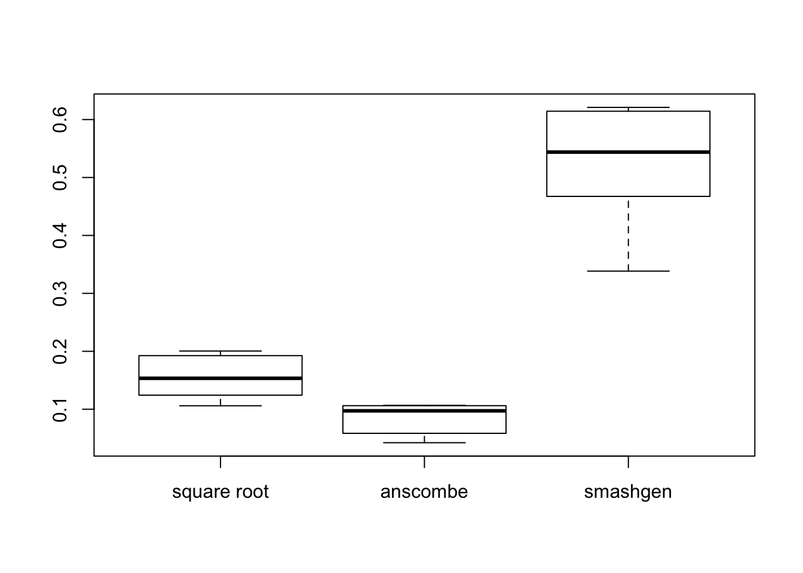
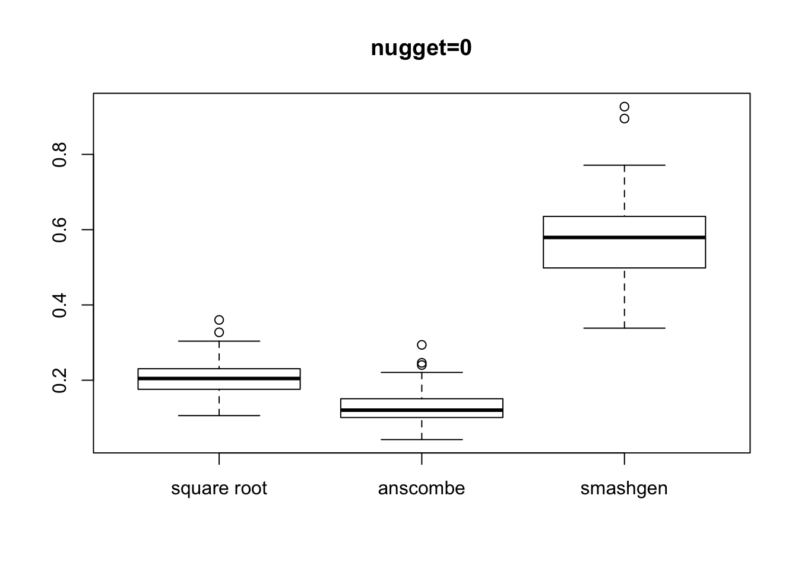
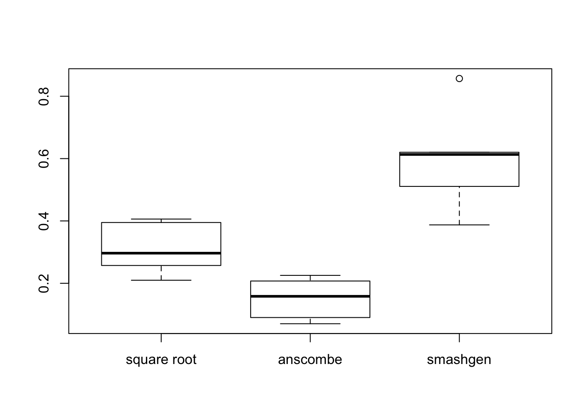
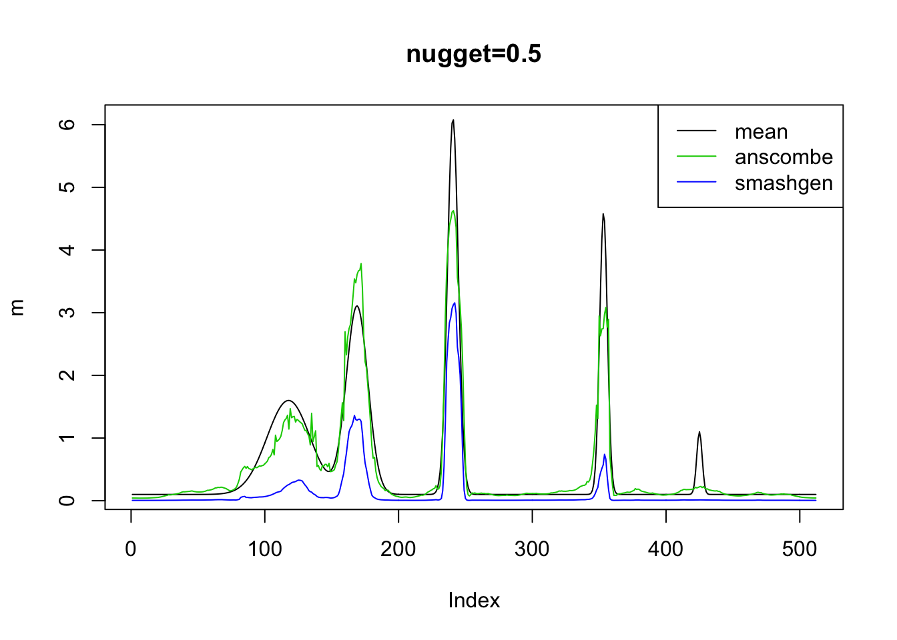
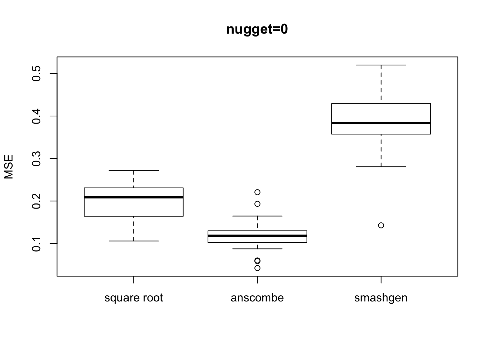
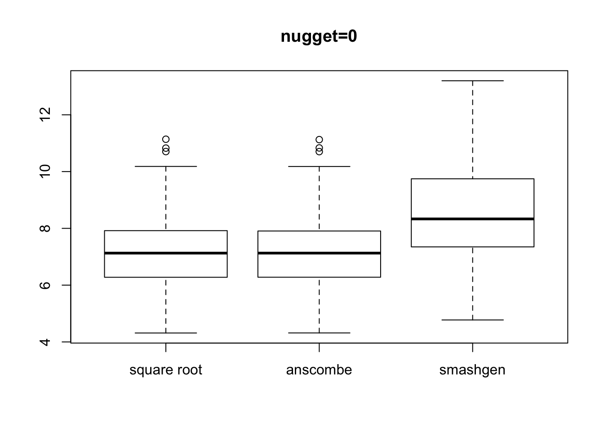

Last updated: 2018-10-18
workflowr checks: (Click a bullet for more information) ✔ R Markdown file: up-to-date
Great! Since the R Markdown file has been committed to the Git repository, you know the exact version of the code that produced these results.
✔ Environment: empty
Great job! The global environment was empty. Objects defined in the global environment can affect the analysis in your R Markdown file in unknown ways. For reproduciblity it’s best to always run the code in an empty environment.
✔ Seed:
set.seed(20180501)
The command set.seed(20180501) was run prior to running the code in the R Markdown file. Setting a seed ensures that any results that rely on randomness, e.g. subsampling or permutations, are reproducible.
✔ Session information: recorded
Great job! Recording the operating system, R version, and package versions is critical for reproducibility.
✔ Repository version: adaace5
wflow_publish or wflow_git_commit). workflowr only checks the R Markdown file, but you know if there are other scripts or data files that it depends on. Below is the status of the Git repository when the results were generated:
Ignored files:
Ignored: .DS_Store
Ignored: .Rhistory
Ignored: .Rproj.user/
Ignored: data/.DS_Store
Untracked files:
Untracked: analysis/ansgen.Rmd
Untracked: analysis/chipexoeg.Rmd
Untracked: analysis/compares.Rmd
Untracked: analysis/talk1011.Rmd
Untracked: data/chipexo_examples/
Untracked: data/chipseq_examples/
Untracked: docs/figure/ansgen.Rmd/
Untracked: talk.Rmd
Untracked: talk.pdf
Unstaged changes:
Modified: analysis/literature.Rmd
Modified: analysis/sigma.Rmd
| File | Version | Author | Date | Message |
|---|---|---|---|---|
| Rmd | adaace5 | Dongyue Xie | 2018-10-18 | wflow_publish(“analysis/vst.Rmd”) |
| html | d45f4a0 | Dongyue Xie | 2018-10-16 | Build site. |
| Rmd | 4c8fd13 | Dongyue Xie | 2018-10-16 | vst analysis |
| html | 50eeda4 | Dongyue Xie | 2018-10-16 | Build site. |
| Rmd | ce75cae | Dongyue Xie | 2018-10-16 | vst analysis |
| html | e24d0a7 | Dongyue Xie | 2018-10-16 | Build site. |
| Rmd | 0d956ea | Dongyue Xie | 2018-10-16 | vst analysis |
Variance stablizing transformation.
\(E(X)=\mu\) and \(Var(X)=g(\mu)\), want to find \(f(\cdot)\) s.t \(Var(f(X))\) has constant variance. Consider the Taylor series expansion of \(f(X)\) around \(\mu\): \(f(X)\approx f(\mu)+(Y-\mu)f'(\mu)\) so we have \([f(X)-f(\mu)]^2\approx (X-\mu)^2(f'(\mu))^2 \Rightarrow Var(f(X))\approx Var(X)(f'(\mu))^2\).
For poisson distribution, \((f'(\mu))^2\propto \mu^{-1}\) so if we take \(Y=\sqrt{X}\) then \(Var(Y)\approx \frac{1}{4}\). This was original proposed by Bartlett in 1936.
For Binomial data, \((f'(\mu))^2\propto 1/(np(1-p))\) so if we take \(Y=sin^{-1}(\sqrt{X/n})\) then \(Var(Y)\approx \frac{1}{2}\).
Anscombe(1948) shows that for \(Y=\sqrt{X+c}\), \(Var(Y)\approx \frac{1}{4}[1+\frac{3-8c}{8\mu}+\frac{32c^2-52c+17}{2\mu^2}]]\). If take \(c=3/8\) and for large \(\mu\), \(Var(Y)\approx 1/4\). Also clearly, \(\lim_{\mu\to 0}Var(\sqrt{X+c})=0\).
mu=c(seq(0,1,length.out = 50),seq(1,10,length.out = 50))
ans=c()
sr=c()
set.seed(12345)
for (i in 1:100) {
x=rpois(1e6,mu[i])
ans[i]=var(sqrt(x+3/8))
sr[i]=var(sqrt(x))
}
plot(mu,ans,type='l',ylim=c(0,0.5),ylab='')
lines(mu,sr,col=4)
abline(a=0.25,b=0,lty=2)
legend('bottomright',c('anscombe','square root'),lty=c(1,1),col=c(1,4))
| Version | Author | Date |
|---|---|---|
| e24d0a7 | Dongyue Xie | 2018-10-16 |
Poisson variance stablizing trasformations: square root and Anscombe transformation.
For vst, if we observe \(x=0\), then I use \(var(\sqrt{X+3/8})=0\) instead of \(1/4\).
vst_smooth=function(x,method,ep=1e-5){
n=length(x)
if(method=='sr'){
x.t=sqrt(x)
x.var=rep(1/4,n)
x.var[x==0]=0
mu.hat=(smashr::smash.gaus(x.t,sigma=sqrt(x.var)))^2
}
if(method=='anscombe'){
x.t=sqrt(x+3/8)
x.var=rep(1/4,n)
x.var[x==0]=0
mu.hat=(smashr::smash.gaus(x.t,sigma=sqrt(x.var)))^2-3/8
}
if(method=='log'){
x.t=x
x.t[x==0]=ep
x.var=1/x.t
x.t=log(x.t)
mu.hat=exp(smashr::smash.gaus(x.t,sigma=sqrt(x.var)))
}
return(mu.hat)
}simu_study=function(m,sig=0,nsimu=50,seed=12345){
set.seed(seed)
sr=c()
an=c()
ashp=c()
for (i in 1:nsimu) {
lambda=exp(log(m)+rnorm(n,0,sig))
x=rpois(n,lambda)
mu.sr=vst_smooth(x,'sr')
mu.an=vst_smooth(x,'anscombe')
mu.ash=smash_gen_lite(x)
sr=rbind(sr,mu.sr)
an=rbind(an,mu.an)
ashp=rbind(ashp,mu.ash)
}
return(list(sr=sr,an=an,ashp=ashp))
}When there are a number of \(0s\) in the observation:
library(ashr)
library(smashrgen)
spike.f = function(x) (0.75 * exp(-500 * (x - 0.23)^2) + 1.5 * exp(-2000 * (x - 0.33)^2) + 3 * exp(-8000 * (x - 0.47)^2) + 2.25 * exp(-16000 *
(x - 0.69)^2) + 0.5 * exp(-32000 * (x - 0.83)^2))
n = 512
t = 1:n/n
m = spike.f(t)
m=m*2+0.1
range(m)[1] 0.100000 6.076316result=simu_study(m)
mses=lapply(result, function(x){apply(x, 1, function(y){mean((y-m)^2)})})
plot(m,type='l',main='nugget=0')
lines(result$sr[1,],col=2)
lines(result$an[1,],col=3)
lines(result$ashp[1,],col=4)
legend('topright',c('mean','square root','anscombe','smashgen'),lty=c(1,1,1,1),col=c(1,2,3,4))
| Version | Author | Date |
|---|---|---|
| d45f4a0 | Dongyue Xie | 2018-10-16 |
| e24d0a7 | Dongyue Xie | 2018-10-16 |
boxplot(mses,names = c('square root','anscombe','smashgen'),main='nugget=0')
| Version | Author | Date |
|---|---|---|
| d45f4a0 | Dongyue Xie | 2018-10-16 |
| e24d0a7 | Dongyue Xie | 2018-10-16 |
########
result=simu_study(m,sig=1)
mses=lapply(result, function(x){apply(x, 1, function(y){mean((y-m)^2)})})
unlist(lapply(mses, mean)) sr an ashp
4.5118171 3.9275643 0.3550666 plot(m,type='l',main='nugget=1')
#lines(result$sr[1,],col=2)
lines(result$an[1,],col=3)
lines(result$ashp[1,],col=4)
legend('topright',c('mean','anscombe','smashgen'),lty=c(1,1,1),col=c(1,3,4))
| Version | Author | Date |
|---|---|---|
| d45f4a0 | Dongyue Xie | 2018-10-16 |
| e24d0a7 | Dongyue Xie | 2018-10-16 |
#legend('topright',c('mean','square root','anscombe','smashgen'),lty=c(1,1,1,1),col=c(1,2,3,4))
boxplot(mses,names = c('square root','anscombe','smashgen'),main='nugget=1')
| Version | Author | Date |
|---|---|---|
| d45f4a0 | Dongyue Xie | 2018-10-16 |
| e24d0a7 | Dongyue Xie | 2018-10-16 |
###############Increase range of mean function:
m=m*20+30
range(m)[1] 32.0000 151.5263result=simu_study(m)
mses=lapply(result, function(x){apply(x, 1, function(y){mean((y-m)^2)})})
unlist(lapply(mses, mean)) sr an ashp
7.136878 7.135470 8.256312 plot(m,type='l',main='nugget=0')
lines(result$sr[1,],col=2)
lines(result$an[1,],col=3)
lines(result$ashp[1,],col=4)
legend('topright',c('mean','square root','anscombe','smashgen'),lty=c(1,1,1,1),col=c(1,2,3,4))
| Version | Author | Date |
|---|---|---|
| d45f4a0 | Dongyue Xie | 2018-10-16 |
| e24d0a7 | Dongyue Xie | 2018-10-16 |
boxplot(mses,names = c('square root','anscombe','smashgen'),main='nugget=0')
| Version | Author | Date |
|---|---|---|
| d45f4a0 | Dongyue Xie | 2018-10-16 |
| e24d0a7 | Dongyue Xie | 2018-10-16 |
sessionInfo()R version 3.5.1 (2018-07-02)
Platform: x86_64-apple-darwin15.6.0 (64-bit)
Running under: macOS High Sierra 10.13.6
Matrix products: default
BLAS: /Library/Frameworks/R.framework/Versions/3.5/Resources/lib/libRblas.0.dylib
LAPACK: /Library/Frameworks/R.framework/Versions/3.5/Resources/lib/libRlapack.dylib
locale:
[1] en_US.UTF-8/en_US.UTF-8/en_US.UTF-8/C/en_US.UTF-8/en_US.UTF-8
attached base packages:
[1] stats graphics grDevices utils datasets methods base
other attached packages:
[1] smashrgen_0.1.0 wavethresh_4.6.8 MASS_7.3-50 caTools_1.17.1.1
[5] smashr_1.2-0 ashr_2.2-7
loaded via a namespace (and not attached):
[1] Rcpp_0.12.18 compiler_3.5.1 git2r_0.23.0
[4] workflowr_1.1.1 R.methodsS3_1.7.1 R.utils_2.7.0
[7] bitops_1.0-6 iterators_1.0.10 tools_3.5.1
[10] digest_0.6.17 evaluate_0.11 lattice_0.20-35
[13] Matrix_1.2-14 foreach_1.4.4 yaml_2.2.0
[16] parallel_3.5.1 stringr_1.3.1 knitr_1.20
[19] REBayes_1.3 rprojroot_1.3-2 grid_3.5.1
[22] data.table_1.11.6 rmarkdown_1.10 magrittr_1.5
[25] whisker_0.3-2 backports_1.1.2 codetools_0.2-15
[28] htmltools_0.3.6 assertthat_0.2.0 stringi_1.2.4
[31] Rmosek_8.0.69 doParallel_1.0.14 pscl_1.5.2
[34] truncnorm_1.0-8 SQUAREM_2017.10-1 R.oo_1.22.0 This reproducible R Markdown analysis was created with workflowr 1.1.1